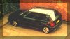

Johnny is now 26 and as you can see he loves Fiat. His first Tipo was stunning, It had the recaro interia and it was all original and standard. I was very quick and it gave many cars a good run for there money! (especially on the corners!) His current Tipo is Black with 3 doors. He's had no problems with it just like my first one. They were both great to drive and never failed to disappoint him.
His current Tipo has a full 2inch stainless steel exhaust all made up professionally. He even had to change the flexi pipe costing £130.
